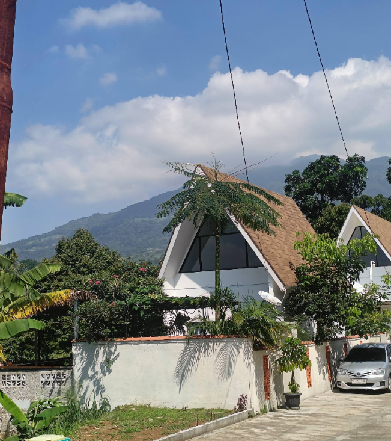
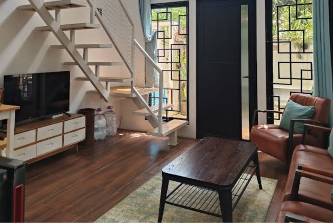
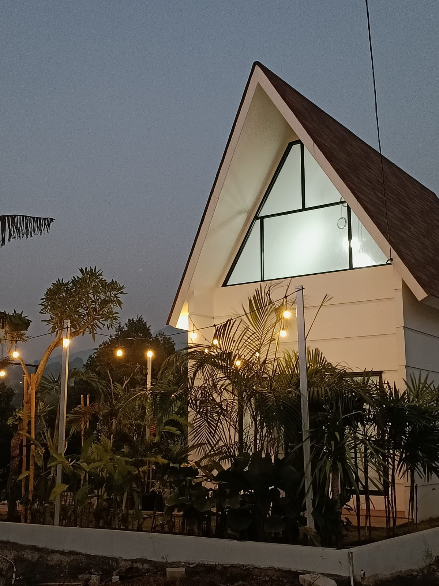
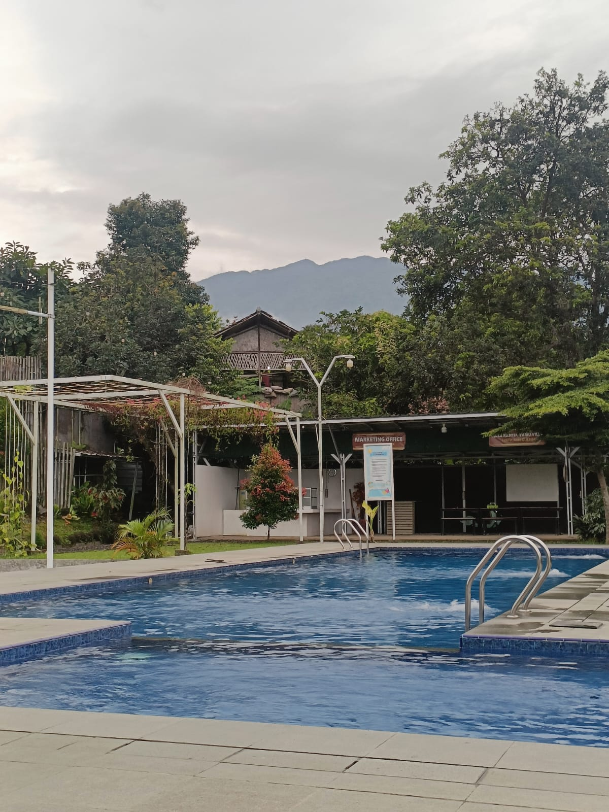
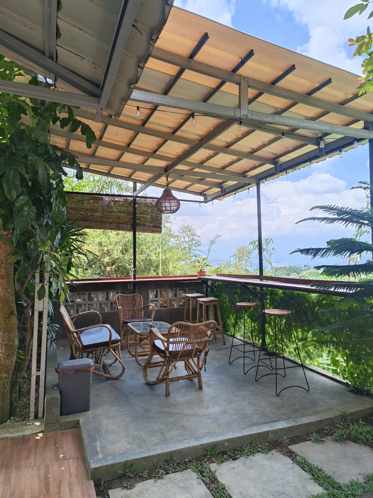
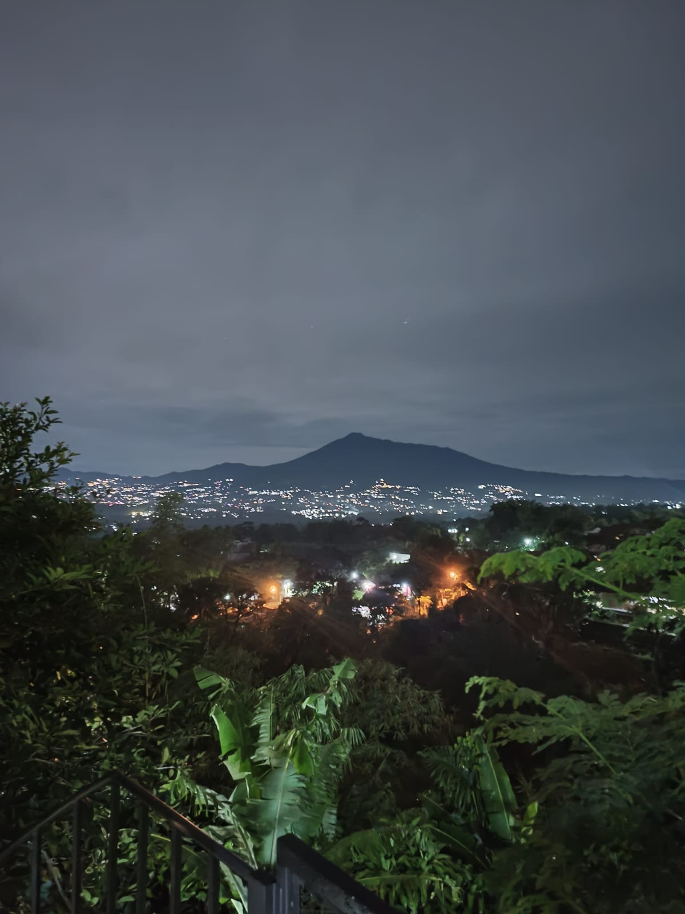

GALERI OMAH NOTO
Momen yang tinggal
dalam ingatan.
Lihat lebih dekat suasana, fasilitas, dan berbagai sudut Omah Noto Cijeruk yang dirancang untuk memberikan pengalaman menginap yang nyaman dan berkesan.
01 — FOTO VILLA
Setiap sudut punya
ceritanya sendiri.
Dari ruang bersantai hingga area luar villa, temukan suasana Omah Noto Cijeruk melalui setiap foto.

Suasana Omah Noto Cijeruk
Suasana villa yang nyaman dan tenang untuk menikmati waktu bersama.

Interior Omah Noto Cijeruk
Desain interior yang nyaman dan estetik untuk kenyamanan Anda.

Area Villa Omah Noto Cijeruk
Area villa yang nyaman dan tenang untuk menikmati waktu bersama.

Fasilitas Omah Noto Cijeruk
Fasilitas yang lengkap untuk kenyamanan Anda selama menginap.

Suasana Omah Noto Cijeruk
Suasana villa yang nyaman dan tenang untuk menikmati waktu bersama.

Pemandangan Omah Noto Cijeruk
Pemandangan yang indah dan menenangkan untuk menikmati waktu bersama.
02 — VIDEO VILLA
Rasakan suasananya
sebelum datang.
Saksikan suasana Omah Noto Cijeruk melalui video singkat yang memperlihatkan pengalaman menginap di villa.